Over the last decade, Nandan has worked in varied roles across impact investing, sustainability, consulting, non-profits, academia and politics in Asia, Africa and Europe.
Based in the United Kingdom, he is currently a Programme Lead at Climate Catalyst, an international non-profit start-up dedicated to galvanising the collective power of businesses, investors and civil society to influence and accelerate policy change.
Education
Profession
Mentor
Podcast
Personal
Education
Master's Degree
Nandan holds a Masters’ degree in International Studies and Diplomacy, majoring in International Economics and Energy & Climate Policy from the School of Oriental and African Studies (SOAS), University of London. He has a Bachelor’s degree in Media and Communication from Symbiosis International University, India.
At the School of Oriental and African Studies, University of London.
Further Achievements
In 2016, he was a Fred J Hansen Leadership Fellow at the University of San Diego’s School of Leadership and Education Sciences.
Won a prestigious scholarship to represent India at the Hansen Leadership Institute in San Diego, USA
Profession
Select a section to view:
Annual Meeting
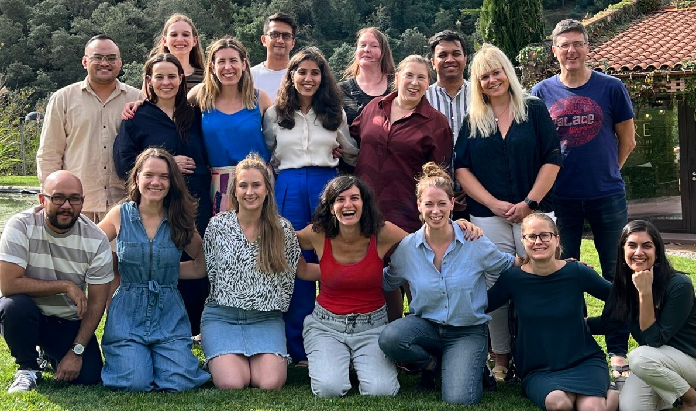
At Climate Catalyst's 2023 annual retreat in Barcelona, Spain
Green Steel Network annual meeting
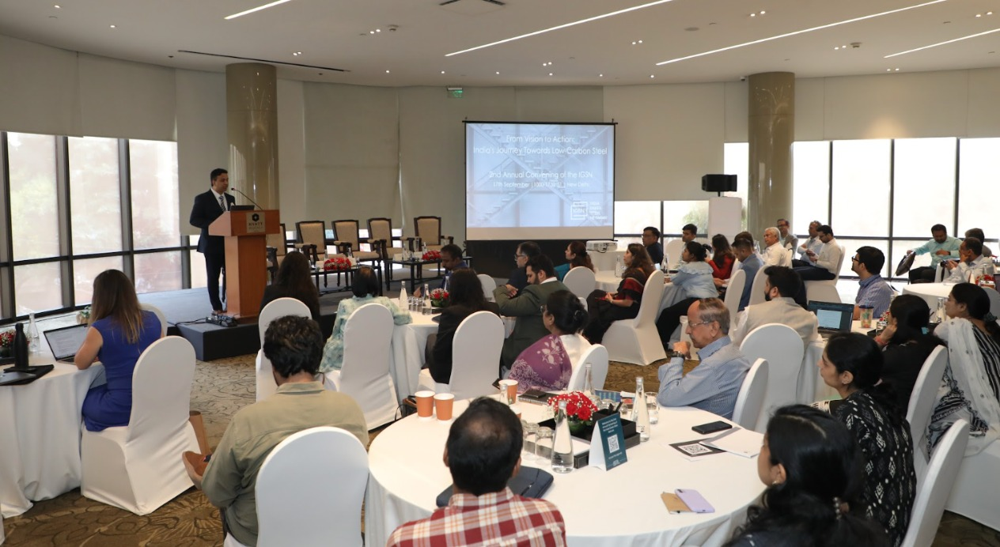
on technology pathways to decarbonise the steel sector at the 2024 India Green Steel Network annual meeting in New Delhi, India
India Climate Leaders (ICL)
In his previous role at India Climate Collaborative, he led India Climate Leaders (ICL), an initiative focused on building the climate philanthropic ecosystem in India, working with partners like Rockefeller Foundation and Climate Lead.
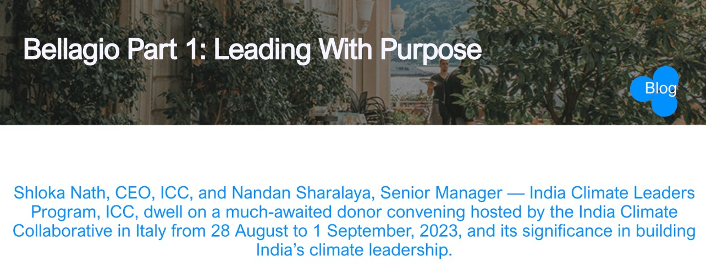
At ICC, my role was to develop a first of its kind cohort of domestic philanthropic leaders in India committed to moving the needle on climate
Omidyar Network India
Between 2020-23 at Omidyar Network India, he sourced and managed investments across the areas of Digital Society, Governance & Citizen Engagement and Property Rights initiatives. He also led the firm’s Non-Profit Sector Development and Migration portfolios.
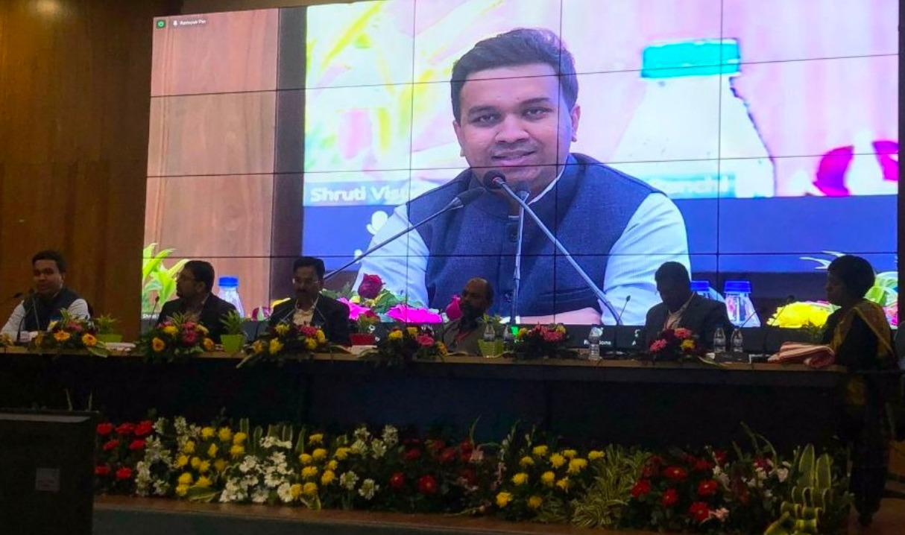
Speaking at the launch of the Safe & Responsible Migration Initiative (SRMI), a first of it's kind state government initiative that I helped conceptualise and lead
FTI Consulting
In consulting engagements at FTI Consulting, he was advising clients like Virgin Hyperloop One, Abu Dhabi Investment Authority, DP World, Responsible Mica Initiative, etc. on their public affairs and communications strategy.
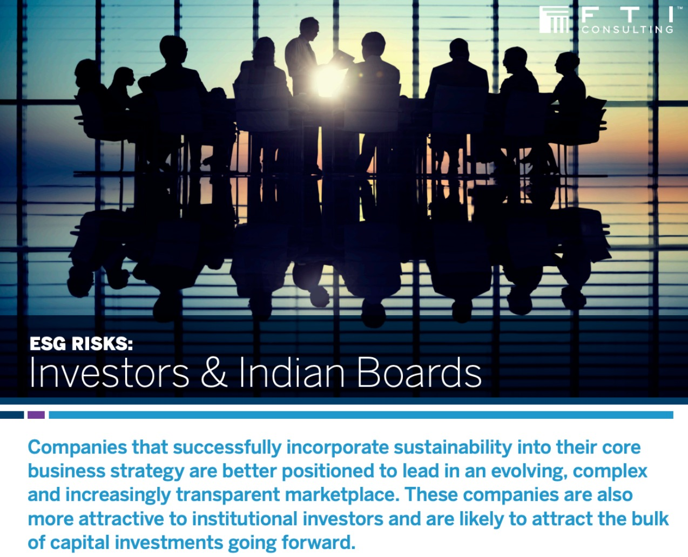
At FTI Consulting, I developed a case for the firm's entry into sustainability consulting and developed unique ESG and investor action-focused thought leadership initiatives, such as the Asia Disclosure Index
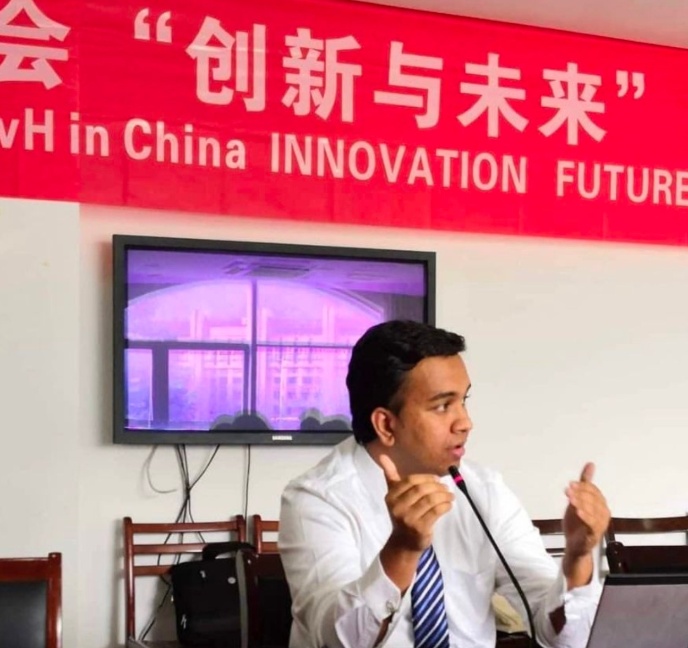
Speaking on the future of multi-modal transportation at the AvH Futures Forum in Hangzhou, China
German Chancellor Fellow
Between 2016-18, Nandan was based in Berlin as a German Chancellor Fellow (Alexander von Humboldt Foundation) and was a visiting scholar at WHU - Otto Beisheim School of Management.
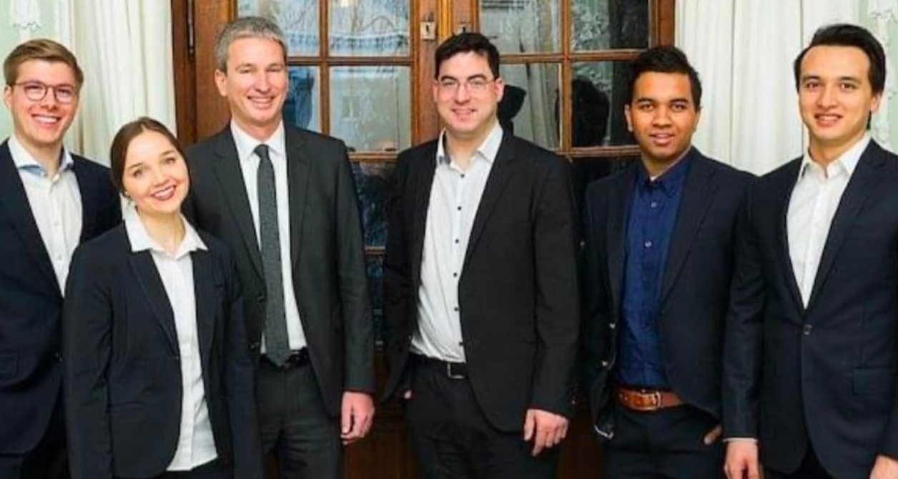
I was a Visiting Fellow at the Institute of Industrial Organisation, WHU Otto Beisheim School of Management, Germany's premier business school. My research was focused on building urban climate resilience in Indian and European cities
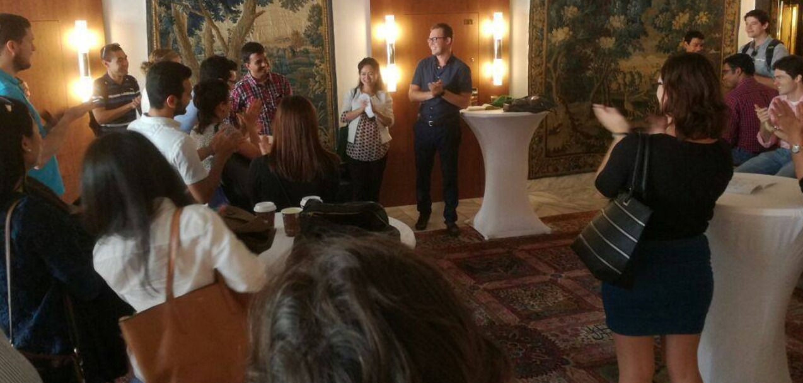
Giving my first short speech in German in Bonn, Germany at the end of an intensive language course. My proficiency in German and French though remains at A1. However, I am conversant in 4 Indian languages
PRS Legislative Research.
Nandan began his career managing legislative strategy for over a 100+ Members of Parliament from both the houses, while serving as Chief of Staff to Member of Parliament Professor Rajeev Gowda. He has also been a LAMP Fellow (Legislative Assistant to an MP) with PRS Legislative Research.
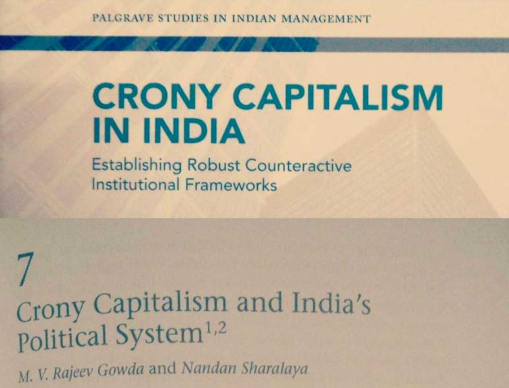
Co-authored a book chapter on cronyism and its links to Indian politics. The chapter has since been widely cited in leading journals and books
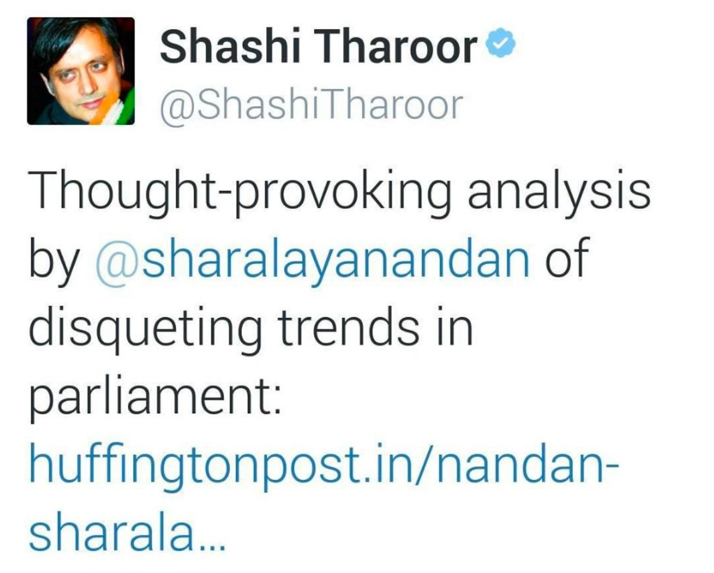
Several high-profile political and business leaders have shared my writings in their social channels including former UN Undersecretary General Shashi Tharoor
Mentor
Select a section to view:
MIT School of Government
He is a visiting faculty in several media and policy schools in India and internationally.
He has taught courses and workshops in public policy, design thinking, international development,
negotiation strategy and political communication at the MIT School of Government, University of Minnesota,
Jindal University etc.
I teach a course in parliamentary policies and political leadership at the MIT School of Government in Pune, India and have done so for over 5 years.
Mint
In the past, his writings have appeared in several national and international magazines and portals
including The Conversation, Huffington Post, U.S News, The Diplomat, Scroll, Mint etc.
To read all my writings, click on the Opinions section of this website.
Podcast
Select a section to view:
Podcast-Switch with Hushl
Outside of work, Nandan enjoys playing badminton, finding joy in cricket and Bollywood trivia, reading business non-fiction, savouring South Asian cuisine, and sharing his interests as a podcast host.
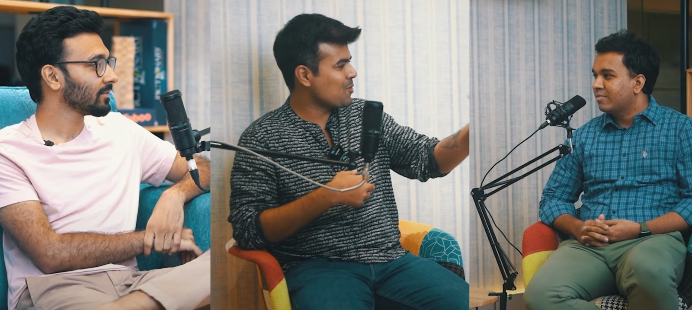
To read all my writings, click on the Opinions section of this website.
Royal Challengers Bengaluru
Select a section to view:
Dr. Radhika Acharya
Nandan alternates his time between Manchester, United Kingdom where he is currently based with his wife Dr. Radhika Acharya and Bangalore, where he calls home. His early years include 14 years spent living in Nigeria.
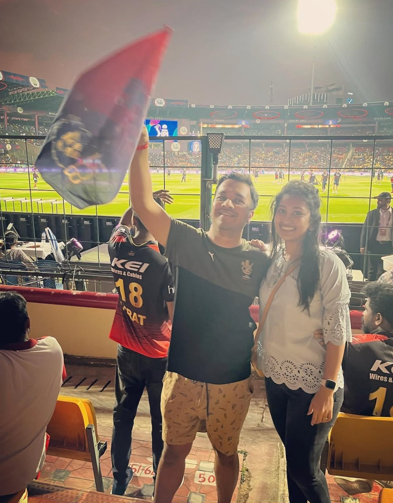
Supporting my favourite team the Royal Challengers Bengaluru at the Chinnaswamy cricket stadium in Bangalore
Nandan hopes that one day he will be able to backpack across 100 countries (58 more to go!), that the Royal Challengers Bangalore will win an IPL trophy, and that he will start a South Indian snack bar — all of which seem like distant dreams today!